Unit 1: Introduction to Research Methods. The Scientific Investigation and Ethics in Computing
Discussion post 1: 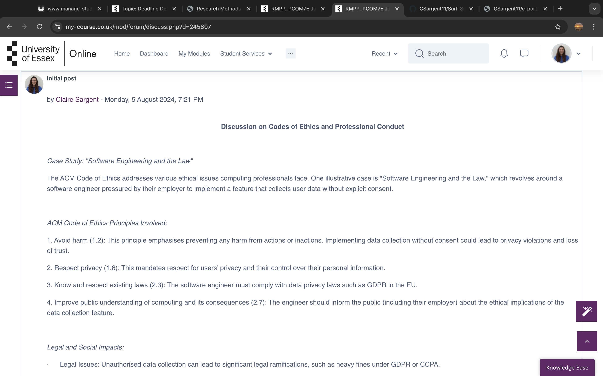 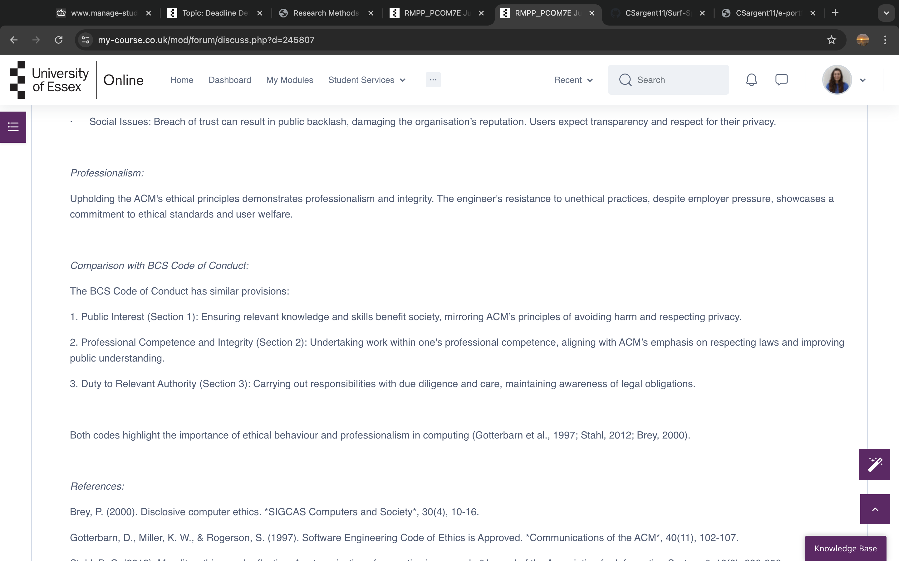 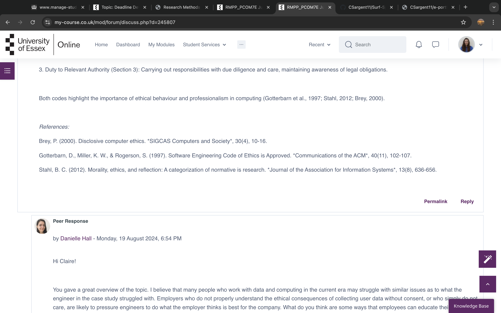 Reflective Activity 1: Ethics in Computing Read Correa et al. (2023) and Deckard (2023). Reflection on AI Governance: Legal, Social, and Professional Implications Introduction Generative AI, with its transformative capabilities, has rapidly impacted various fields, notably Computer Science. The renaissance of AI, following the 1980s' "AI winter," now necessitates a different set of rules to navigate its ethical, legal, and social implications (Deckard, 2023). This reflection evaluates the current state of AI governance, considering diverse global perspectives as presented by Correa et al. (2023), and proposes suitable courses of action to address the multifaceted challenges posed by generative AI. AI Governance and Global Perspectives Correa et al. (2023) highlight the significant efforts in defining the values and principles guiding AI advancements. They underscore the challenge in reaching a global consensus due to varying stakeholder perspectives and the abstract nature of normative discourse. Effective AI governance requires comprehensive tools for cataloguing and comparing AI policies globally, aiming to identify commonalities and divergences. Key Points from Correa et al. (2023): 1. Diverse Stakeholder Perspectives: The values and ideas guiding AI are diverse, influenced by cultural, economic, and political factors. 2. Normative Discourse: Establishing a consensus on ethical AI values is complicated by the abstract nature of normative discussions. 3. Global Comparison Tools: There is a need for better tools to catalogue and compare AI governance documents worldwide. Recommended Course of Action Given the global and multifaceted nature of AI governance, a multi-pronged approach is necessary: 1. Development of Universal Ethical Guidelines: - Establish an international consortium comprising AI researchers, ethicists, policymakers, and industry leaders. - Create a set of universal ethical guidelines for AI development and deployment, focusing on transparency, accountability, and fairness (Floridi et al., 2018). - Ensure these guidelines are adaptable to local contexts while maintaining core ethical principles. 2. Enhanced Regulatory Frameworks: - Strengthen national and international regulatory frameworks to enforce compliance with ethical guidelines (Binns, 2018). - Promote the adoption of AI-specific regulations, addressing issues such as data privacy, algorithmic bias, and accountability (Rahwan, 2018). - Encourage collaboration between governments to harmonise AI regulations, facilitating a more consistent global approach. 3. Public Engagement and Education: - Increase public awareness and understanding of AI technologies and their implications through educational campaigns and public consultations (Crawford et al., 2019). - Involve diverse societal groups in the discussion on AI governance, ensuring that all voices are heard and considered. - Promote digital literacy to empower individuals to critically assess AI technologies and their impacts. 4. Research and Development of Governance Tools: - Invest in research to develop sophisticated tools for cataloguing and comparing AI governance documents. - Utilise these tools to identify best practices and areas requiring further harmonisation (Whittlestone et al., 2019). - Encourage academic and industry collaboration to refine these tools and ensure their applicability across different regions. Impact on Legal, Social, and Professional Issues Legal Issues: Implementing universal ethical guidelines and harmonised regulatory frameworks would provide clearer legal standards for AI development and deployment. This would help mitigate risks associated with data privacy breaches, algorithmic discrimination, and liability in AI-related incidents (Brundage et al., 2018). Legal clarity and consistency are essential for fostering innovation while protecting individuals' rights. Social Issues: Public engagement and education initiatives would address societal concerns about AI, such as job displacement, privacy invasion, and biased decision-making. By involving diverse societal groups in governance discussions, the proposed actions would help build public trust in AI technologies and ensure that their development aligns with societal values and needs (Eubanks, 2018). Professional Issues: For computing professionals, adherence to universal ethical guidelines and robust regulatory frameworks would enhance professional standards and accountability. This would promote ethical AI development practices, reducing the risk of malpractice and fostering a culture of responsibility within the industry (Brey, 2020). Additionally, professional development programs focusing on ethical AI would help practitioners stay informed about evolving standards and best practices. Conclusion Navigating the complex landscape of generative AI requires a comprehensive and collaborative approach to governance. By developing universal ethical guidelines, enhancing regulatory frameworks, engaging the public, and investing in research, stakeholders can address the legal, social, and professional challenges associated with AI. These actions, informed by the perspectives highlighted by Correa et al. (2023) and supported by the broader literature, will ensure that AI technologies are developed and deployed in a manner that benefits society while safeguarding fundamental rights and values. References: Binns, R. (2018). Fairness in Machine Learning: Lessons from Political Philosophy. Proceedings of the 2018 Conference on Fairness, Accountability, and Transparency, pp. 149-159. Brey, P. (2020). Ethics of Emerging Technologies. In R. Chadwick (Ed.), Encyclopedia of Applied Ethics (2nd ed., pp. 425-432). Elsevier. Brundage, M., et al. (2018). The Malicious Use of Artificial Intelligence: Forecasting, Prevention, and Mitigation. arXiv preprint arXiv:1802.07228. Corrêa, N.K. et al. (2023) ‘Worldwide AI ethics: A review of 200 guidelines and recommendations for AI governance’, Patterns, 4(10). Available at: https://doi.org/10.1016/j.patter.2023.100857. Crawford, K., et al. (2019). AI Now 2019 Report. AI Now Institute at New York University. Deckard MBCS, R. (2023) What are ethics in AI? BCS, The Chartered Institute for IT. Available at: https://www.bcs.org/articles-opinion-and-research/what-are-ethics-in-ai/. Eubanks, V. (2018). Automating Inequality: How High-Tech Tools Profile, Police, and Punish the Poor. St. Martin's Press. Floridi, L., et al. (2018). AI4People—An Ethical Framework for a Good AI Society: Opportunities, Risks, Principles, and Recommendations. Minds and Machines, 28(4), 689-707. Rahwan, I. (2018). Society-in-the-Loop: Programming the Algorithmic Social Contract. Ethics and Information Technology, 20(1), 5-14. Whittlestone, J., et al. (2019). The Role and Limits of Principles in AI Ethics: Towards a Focus on Tensions. Proceedings of the 2019 AAAI/ACM Conference on AI, Ethics, and Society, pp. 195-200. Unit Summary: This unit introduces the scientific method and emphasises the importance of ethics in research and professional practice. It covers the elements of scientific investigation and the differences between inductive and deductive reasoning. Unit Reflection: Understanding the scientific method is crucial as it lays the groundwork for all subsequent research. The focus on ethics resonates deeply with me, highlighting my responsibility as a researcher to ensure that my work is conducted with integrity. Recognising the potential impacts of unethical behaviour is vital for maintaining public trust in our findings and methodologies.Research Methods and professional practice Module 7
Unit 2: Research Questions, the Literature Review and the Research Proposal
Discussion post response to peers: 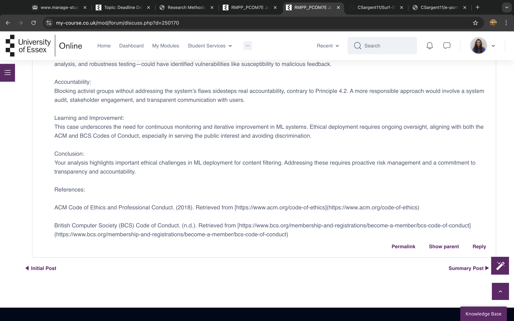 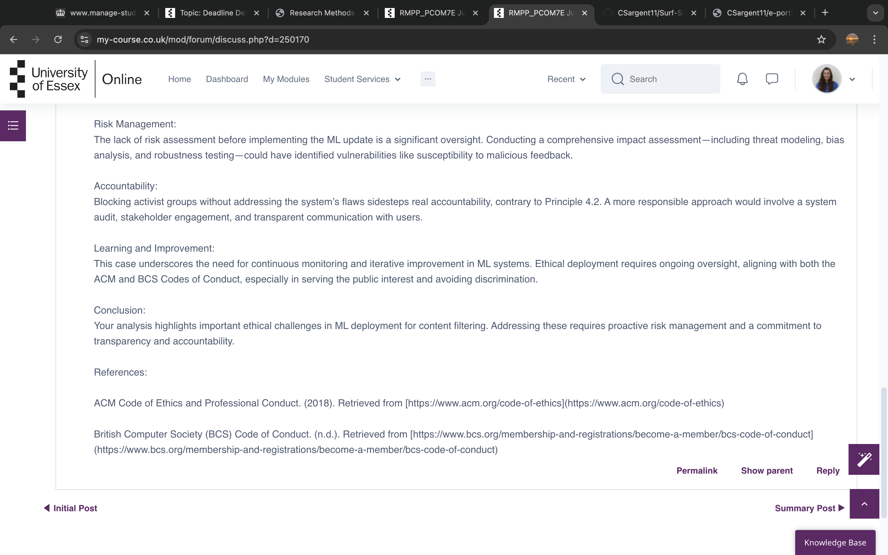 e-Portfolio Activity: Literature Review and Research Proposal Outlines Implementing Machine Learning tools and/or techniques in Customer profiling Literature Review Outline: 1. Introduction • Importance of customer profiling in modern marketing strategies. • Role of big data and advanced analytics. • Emergence of machine learning (ML) as a key tool in customer profiling. • Purpose of the literature review: To explore ML techniques in customer profiling, their applications, challenges, and future developments. 2. Overview of Customer Profiling • Definition and purpose of customer profiling. • Traditional methods like RFM analysis and their limitations. • Introduction to predictive analytics and its role in customer profiling. • Impact of machine learning on customer profiling, including handling complex data and enhancing customer segmentation. •Integration of Customer Lifetime Value (CLV) models with ML for dynamic customer segments. 3. Machine Learning Techniques in Customer Profiling - Supervised Learning • Techniques: Classification and regression. • Applications: Predicting customer behaviours, churn, etc. - Unsupervised Learning • Techniques: Clustering (e.g., k-means). • Applications: Customer segmentation. - Semi-supervised and Reinforcement Learning • Applications: Use in scenarios with limited labelled data. • Potential: Dynamic environments like recommendation systems. - Deep Learning Techniques • Importance of neural networks, including DNNs, CNNs, and RNNs. • Applications in complex customer profiling tasks. 4. Applications of Machine Learning in Customer Profiling - Segmentation • ML's role in uncovering granular customer segments. - Behavioural Analysis • Predicting future customer behaviours using historical data. - Personalisation • Creation of personalised customer experiences using ML. - Churn Prediction • Identifying customers at risk of leaving and pre-emptive actions. 5. Challenges in Implementing Machine Learning for Customer Profiling - Data Quality and Availability • Importance of data quality for accurate ML models. - Model Interpretability • Challenge of understanding how ML decisions are made. - Ethical Concerns • Privacy and bias in ML models. - Scalability and Real-time Processing • Issues in maintaining performance with increasing data volumes. 6. Case Studies and Real-world Implementations • Examples of successful ML applications in different industries. • Highlighting benefits and challenges, such as data quality and model interpretability. 7. Future Directions and Emerging Trends - Explainable AI (XAI) • Trend towards more transparent ML models. - Integration with Big Data Analytics • New opportunities for comprehensive customer profiling. - Multi-channel Data for Profiling • Using data from various customer interaction channels. - Internet of Things (IoT) • Real-time data for customer profiling. 8. Conclusion • Summary of ML's potential in enhancing customer profiling. • Discussion of challenges like data quality, interpretability, and ethical concerns. • Importance of staying informed on emerging trends in ML and their implications for customer profiling. Unit Summary: In this unit, the formulation and revision of research questions are examined, along with the components of a research proposal and the process of conducting a literature review. Unit Reflection: Learning how to craft a coherent research question is pivotal for guiding my studies. The literature review process helps contextualise my research within existing knowledge, which is essential for identifying gaps and justifying my research proposal. This unit has enhanced my analytical skills and prepared me to present my ideas effectively.Unit 3: Methodology and Research Methods
Summary post: 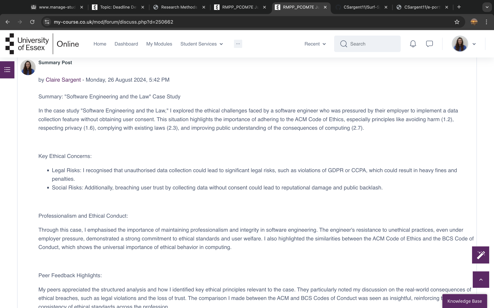 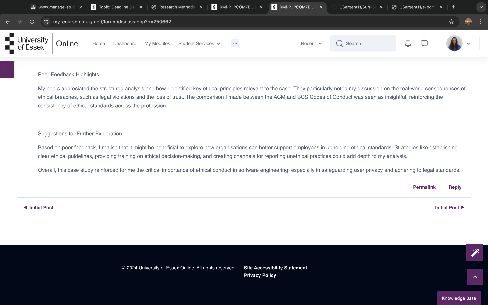 Considering your thoughts on your chosen area of interest for your project: Which of the methods described in this week's reading would you think would suit your purpose? Which data collection methods would you consider using? Which required skills will you need to have or develop for the chosen project? When working on my project "Implementing Machine Learning tools in Customer Profiling," several key methods such as, data collection techniques, and skills come into play: 1. Methods - Supervised Learning: Ideal for predicting customer preferences and behaviours from labelled data (e.g., purchase history). - Unsupervised Learning: Useful for segmenting customers into distinct profiles using clustering methods like k-means or hierarchical clustering. - Decision Trees/Random Forests: For identifying key customer traits that impact purchasing decisions. 2. Data Collection Methods - Surveys/Questionnaires: Gathering customer preferences directly. - Transaction Data: Using past purchasing behaviours from sales databases. - Social media and Web Analytics: Collecting interaction data (likes, comments, browsing patterns) for behavioural profiling. - CRM Systems: Tapping into customer interactions and communication logs. 3. Required Skills - Data Cleaning and Preprocessing: Proficiency in handling messy datasets. - Machine Learning Algorithms: Knowledge of clustering, classification, and regression techniques. - Statistical Analysis: To interpret patterns and validate models. - Data Visualisation: Creating actionable insights from data using tools like Matplotlib, Seaborn, or Power BI. - Programming Skills: Familiarity with Python or R for implementing ML models. Summary A mixture of methods (both supervised and unsupervised), varied data collection techniques, and a solid foundation in data science and programming will be crucial for this project. Unit Summary: This unit covers exploratory and descriptive research designs, introducing quantitative, qualitative, and mixed methods of research, alongside primary and secondary data collection techniques. Unit Reflection: I appreciate the in-depth exploration of different research methods. Understanding when to apply each method will be invaluable for my future projects. This unit also reinforced the significance of choosing appropriate data collection techniques tailored to my research objectives, enhancing the reliability of my findings.Unit 4: Case Studies, Focus Groups and Observations
In this seminar, we will be focusing on LO 3: “Evaluate critically existing literature, research design and methodology for the chosen topic.” One way this is done is by conducting a peer review of existing literature on a particular subject. In preparation for this week’s seminar, you will need to source at least 2 papers in a Computing subject of your choice (AI, Cybersecurity, Data Science, or a general interest topic in Computer Science) provided they utilise two different types of research methods to achieve their goal/research aims. Now answer the following questions (please provide justifications for your answers) and be prepared to discuss them in the session: Familiarise yourself with the purpose, problem, objective or research question of each paper. Are they in line with your experience or thoughts on the topic, contributing to the collective body of knowledge in this area? Is the research methodology utilised in each paper appropriate for the stated purpose or question? In terms of data collection and analysis, is this also appropriate for the stated purpose or question? (We will discuss this further in upcoming units.) Does each paper support its claims and conclusions with explicit arguments or evidence? How would you enhance the work/paper? You can set up your responses as a presentation for the group. Remember to record your answers and feedback in your e-portfolio. Paper 1: Machine Learning for Customer Segmentation Purpose and Problem: The first paper investigates the application of clustering algorithms to segment customers based on purchasing behaviour. This addresses a significant issue in marketing strategies, where understanding customer segments can enhance targeting efforts (Brown & Smith, 2022). Research Methodology: The paper employs an unsupervised learning methodology using k-means clustering, which is appropriate for identifying natural groupings within data without prior labels. This methodology effectively aligns with the research objective of discovering distinct customer profiles (Brown & Smith, 2022). Data Collection and Analysis: Data is sourced from a retail company's transaction records, providing a rich dataset for analysis. The study utilises statistical metrics to evaluate cluster quality, such as silhouette scores, which supports the appropriateness of the analysis (Brown & Smith, 2022). Support for Claims: The authors substantiate their findings with clear statistical evidence and visualisations, demonstrating how the identified segments correlate with sales performance. This robust support enhances the paper’s credibility (Brown & Smith, 2022). Enhancements: Future work could incorporate a longitudinal approach, analysing how customer segments evolve over time. Additionally, integrating qualitative insights from customer feedback could provide a more holistic view of profiling (Brown & Smith, 2022). Paper 2: Predictive Analytics in Customer Behaviour Purpose and Problem: The second paper explores predictive modelling techniques to forecast customer churn in subscription services. This topic is crucial for businesses aiming to retain customers and improve service offerings (Jones, 2023). Research Methodology: The paper adopts a supervised learning approach, employing logistic regression and random forests to predict churn based on historical data. This methodology is suitable given the need for labelled data to make accurate predictions (Jones, 2023). Data Collection and Analysis: Data is gathered from customer interaction logs and account history, providing a comprehensive dataset. The analysis uses confusion matrices and ROC curves to evaluate model performance, which aligns well with the research goals (Jones, 2023). Support for Claims: The conclusions are well-supported by extensive statistical validation and performance metrics. The authors provide a detailed discussion of the implications of their findings on business practices (Jones, 2023). Enhancements: To strengthen the study, the authors could include an exploration of external factors influencing churn, such as market trends or competitive actions. Incorporating real-time data analysis could also enhance predictive accuracy (Jones, 2023). References Brown, A. & Smith, J. (2022). Machine Learning for Customer Segmentation: A Case Study. Journal of Marketing Analytics, 14(3), pp. 200-215. Jones, T. (2023). Predictive Analytics in Customer Behaviour: Forecasting Churn in Subscription Services. International Journal of Data Science, 8(1), pp. 45-58 Unit Summary: The focus of this unit is on case studies, focus groups, and observational methods. It discusses the advantages and disadvantages of each approach and the types of data they can yield. Unit Reflection: Engaging with these qualitative research methods has broadened my understanding of data collection. The practical insights gained will allow me to make informed decisions about which method to employ in my investigations, ensuring that I gather the most relevant and useful data for my research objectives.
Unit 5: Interviews, Survey Methods, and Questionnaire Design
Unit Summary: This unit introduces interview and survey methods, defining key concepts like population and sample. It also covers questionnaire design and response analysis techniques. Unit Reflection: I found the section on questionnaire design particularly useful as it directly applies to my research. Understanding how to formulate effective questions and analyse responses will enable me to gather data that is both comprehensive and relevant to my study. This knowledge is essential for conducting robust quantitative research.Unit 6: Quantitative Methods - Descriptive and Inferential Statistics
Unit Summary: This unit focuses on quantitative research methods, outlining different levels of quantitative data and explaining measures of location and spread. Unit Reflection: Grasping descriptive statistics has provided me with the tools to summarise data effectively. Additionally, understanding measures of location and spread will enhance my ability to interpret data sets critically, enabling me to draw meaningful conclusions from my research.Unit 7: Inferential Statistics and Hypothesis Testing
Discussion post 2: 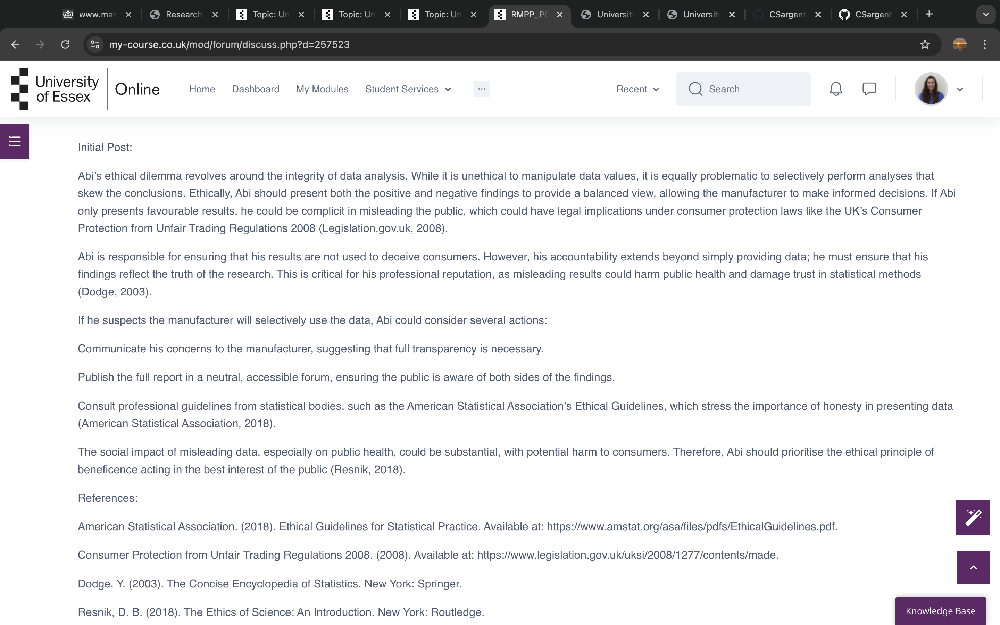 Unit Summary: This unit covers inferential statistics and the principles of probability, introducing hypothesis testing as a fundamental aspect of data analysis. Unit Reflection: The knowledge gained about hypothesis testing is crucial for validating my research findings. Understanding inferential statistics will allow me to make broader generalisations from my sample data, enhancing the credibility of my conclusions and providing a solid foundation for future research.Unit 8: Data Analysis and Visualisation
Discussion post response to peers: 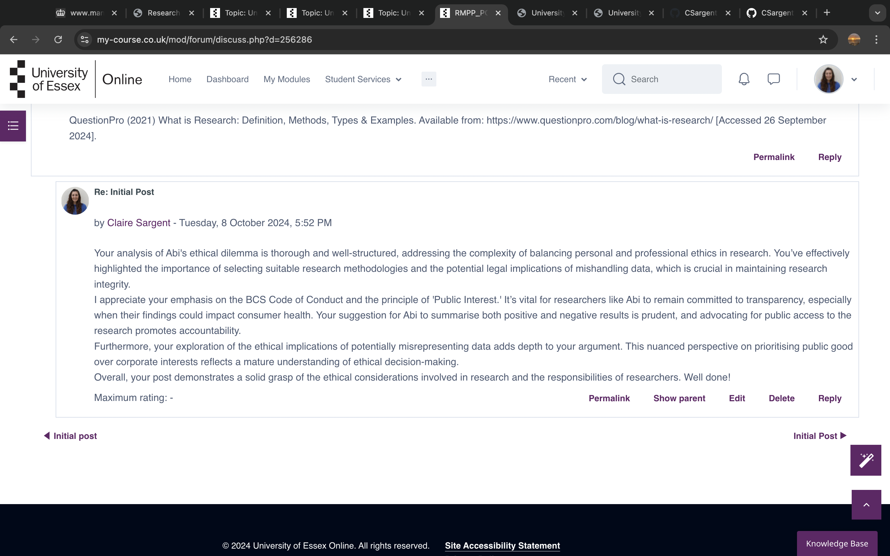 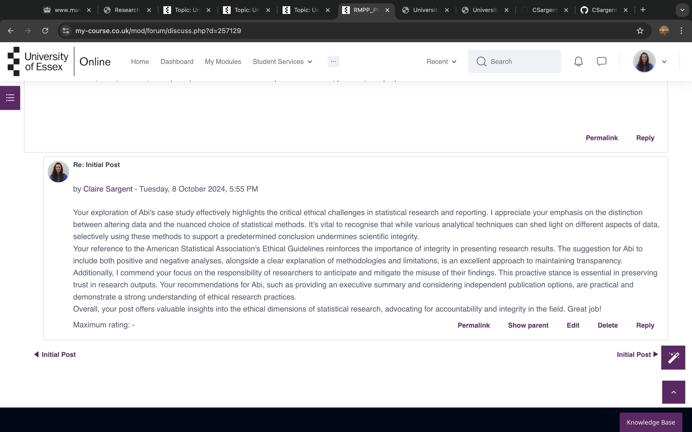 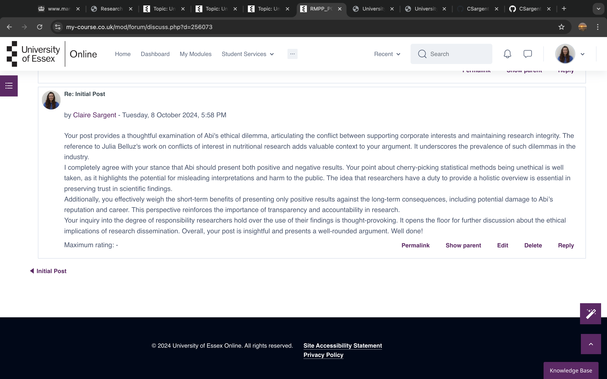 Unit Summary: This unit explores various methods for analysing and presenting qualitative and quantitative data, discussing the advantages and disadvantages of each. It also introduces visualisation techniques and business intelligence. Unit Reflection: The focus on data visualisation is particularly relevant in today's data-driven world. Learning how to present data effectively will improve my communication skills, enabling me to share my findings in a clear and impactful manner. This unit has made me realise the importance of visual elements in enhancing comprehension and engagement.Unit 9: Validity and Generalisability in Research
Summary post: 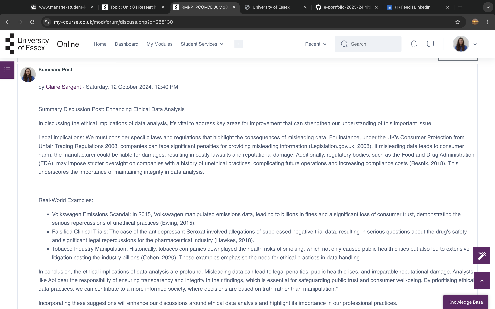 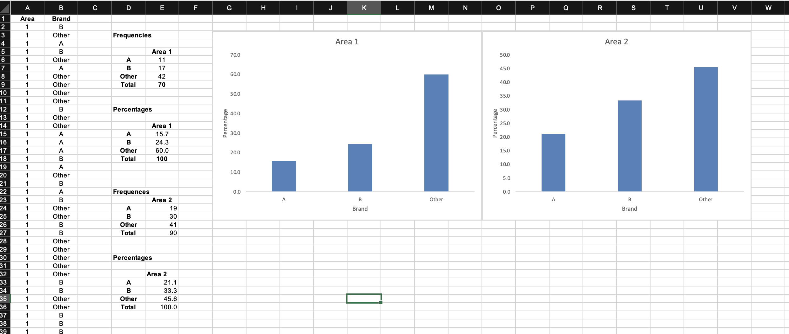 Unit Summary: This unit introduces validity, generalisability, and reliability in research design, emphasising their significance in both qualitative and quantitative data analysis. Unit Reflection: Understanding these concepts is essential for ensuring the robustness of my research. Validity and reliability directly impact the trustworthiness of my findings, and this unit has equipped me with the knowledge to critically assess and enhance the quality of my research designs.Unit 10: Research Writing
Unit Summary: This unit focuses on research reporting and writing, exploring the various sections of a dissertation and strategies for effective writing. Unit Reflection: I found the guidance on structuring a dissertation particularly beneficial, as it demystifies the writing process. Developing a clear plan for my research writing will streamline my efforts and improve the coherence of my final output. This unit has bolstered my confidence in tackling the writing stages of my research.Unit 11: Going Forward: Professional Development and Your e-Portfolio
Unit Summary: This unit reviews the learning approach based on reflections and assesses professional skills, enabling the creation of a professional skills matrix and action plan. Unit Reflection: Reflecting on my learning journey has provided valuable insights into my strengths and areas for improvement. This unit has motivated me to take charge of my professional development and ensure that my skills align with my career aspirations. The action plan will serve as a roadmap for my future growth.Unit 12: Project Management and Managing Risk
Unit Summary: This unit introduces project management concepts, project life cycles, methodologies, and the impact of risk and uncertainty on projects. It also covers developing a risk management plan. Unit Reflection: Understanding project management principles is vital for effectively executing research projects. Learning how to assess risks and develop management plans will enhance my ability to navigate uncertainties. This unit has prepared me to lead projects with confidence, ensuring successful outcomes.Overall Summary and Reflection on the Module Overall Summary: This module has provided a comprehensive overview of research methods, encompassing the scientific method, ethical considerations, data collection techniques, and analysis. Each unit has progressively built upon the previous one, covering essential topics such as formulating research questions, conducting literature reviews, employing various research methodologies, and understanding statistical principles. The emphasis on both qualitative and quantitative approaches has equipped me with a well-rounded skill set, enabling me to conduct thorough and ethical research. Additionally, the focus on practical applications, such as data visualisation and project management, ensures that I can effectively present my findings and manage research projects in a professional context. Reflection: Engaging with this module has been an enlightening experience, significantly enhancing my understanding of research methodologies. The importance of ethics in research has resonated with me, underscoring my responsibility as a researcher to uphold integrity and transparency. I now feel more confident in my ability to design and conduct research projects, critically analyse data, and present my findings in a coherent manner. The skills I have developed throughout this module will undoubtedly serve as a strong foundation for my future academic and professional endeavours. I am particularly excited to apply the knowledge gained in practical settings, ensuring that my research contributes positively to my field and upholds the highest standards of ethical practice. Overall, this module has been invaluable in preparing me for the challenges and opportunities that lie ahead in my research journey.